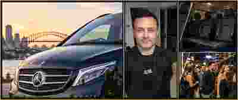

Airport Transfers
Convenient pickups and drop-offs for travellers, couples, families and small groups.
Sydney • Private & supported travel
Comfortable pre-booked travel for individuals, couples, families and groups — from everyday journeys to special occasions.

One service, many occasions
Travel tailored to your plans, whether you're heading out alone or travelling together.
Convenient pickups and drop-offs for travellers, couples, families and small groups.
Reliable pre-arranged transport to work, study, appointments and regular commitments.
Weddings, celebrations, dinners, sport and evenings out — with return trips by arrangement.
Extra assistance for older adults and disability-support clients, planned around individual needs.
Experience in action
Behind the wheel
Dan brings practical transport experience and a comfortable Mercedes-Benz van. Through Compass, we can discuss your journey, support needs and the right arrangements for your booking.
Whether you're an NDIS participant, an older adult, heading to the airport or organising a night out, you're welcome to enquire.
Tell us when and where you're travelling, your passenger numbers and any support needs. We'll help explore a suitable option.